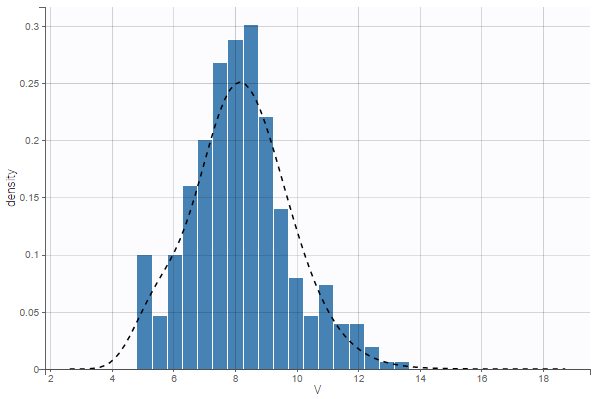
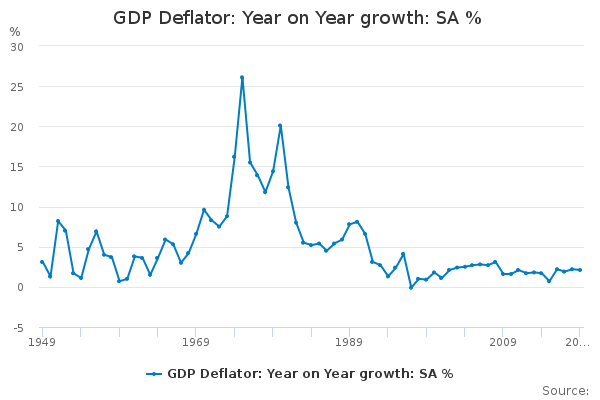
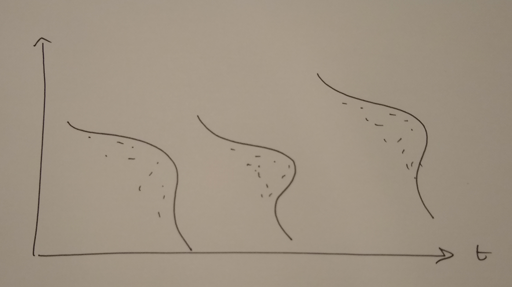
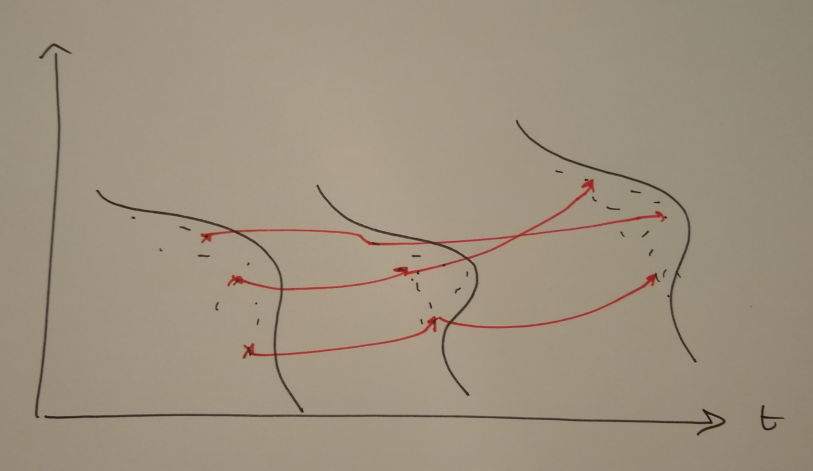
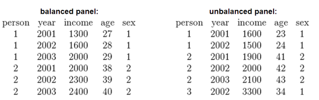
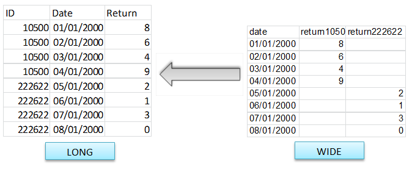
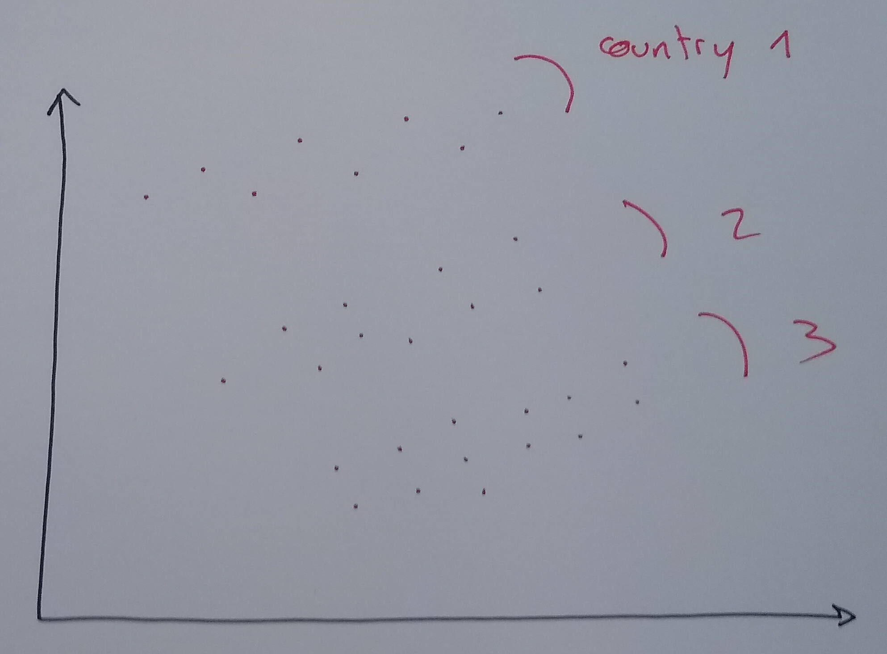
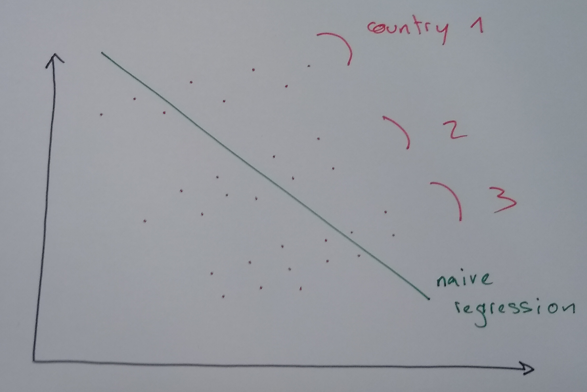
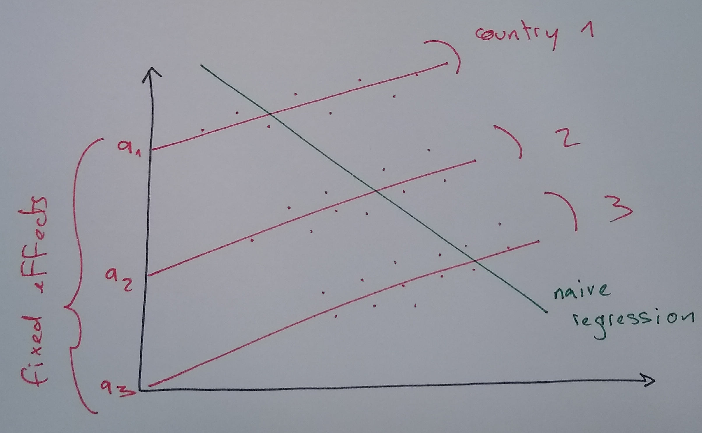
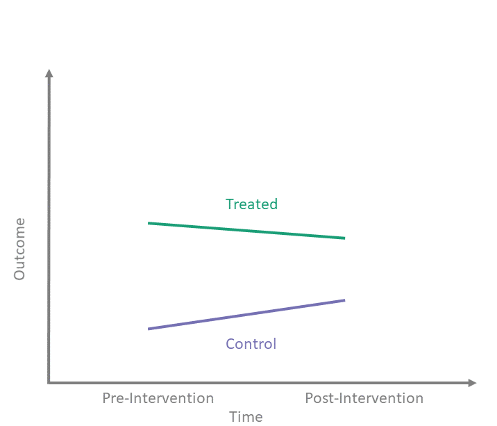

Introduction to Panel Data
Data-Based Economics, ESCP, 2025-2026
Panels: Longitudinal Data
Motivation
A Simple Question
- Question: Does drinking coffee improve productivity?
- Data: We survey 1000 employees over 5 years.
- Cross-Sectional View: Compare Alice (drinks 5 cups) vs. Bob (drinks 0 cups).
- Finding: Alice is more stressed and less productive. \(\rightarrow\) Coffee is bad?
- Time-Series View: Follow Alice when she varies her coffee intake.
- Finding: On days she drinks coffee, she gets more done. \(\rightarrow\) Coffee is good!
- The Puzzle: Alice works in a high-pressure trading floor (stress causes coffee). Bob works in a library.
Panel data lets us separate the individual effect (Alice vs Bob) from the causal effect (Coffee vs No Coffee).
Data Dimensions: Time and Space
Two Dimensions
Until now, we have been rather loose about where the data comes from.
Trying to explain \(N\) observations: \(y_n = a + b x_n, n\in [1,N]\)
All these lonely observations, where do they all come from?
Individuals (Space)
(Cross-section)

Dates (Time)
(Time-series)

Time Series
- very simple study: structural break
- does regression on \([T_1, \overline{T}]\) yield (significantly) different results on \([\overline{T}, T_2]\)
- going further: time series analysis
- data is typically autocorrelated
- example (AR1) \(x_t = a + b x_{t-1} + \epsilon_t\)
Longitudinal Data / Panel Data
1. Repeated Cross-Sections
- Idea: Survey different random people each year.
- Example: “US Census 2000, 2010, 2020”
- Structure:
- Index individual \(i\) and time \(t\).
- But \(i=1\) in 2000 is NOT the same person as \(i=1\) in 2010.
- Analysis:
- We can study trends (e.g. inequality over time).
- But we cannot see who got richer.
2. Longitudinal (Panel) Data
- Idea: Follow the same individuals over time.
- Example: “Tracking the same 5000 families for 20 years (PSID)”
- Structure:
- \(y_{i,t}\) is person \(i\) at date \(t\).
- \(y_{i,t+1}\) is the same person, later.
- Power:
- We can control for unobserved characteristics of \(i\).
- We can study detailed dynamics.


Balanced vs Unbalanced
- Balanced: all individuals in the sample are followed from 1 to T
- Unbalanced: some indivuduals start later, stop earlier

- Crude solutions:
- truncate the dates between \([T_1, T_2]\) so that dataset is balanced
- eliminate individuals who are not present in the full sample
- Not very good:
- can limit a lot the size of the sample
- can induce a “selection bias”
- Real gurus know how to deal with missing values
- many algorithms can be adapted
Long and wide format

- we tend to prefer here the long format (w.r.t id and date)
- there can be many columns though (for each variable)
Micro-Panel vs Macro-Panel
- micro-panel: \(T<<N\)
- Panel Study of Income Dynamics (PSID): 5000 consumers since 1967 (US)
- reinterview same individuals from year to year
- but some go in/out of the panel
- Survey of Consumer and Finance (SCF)
- …
- Panel Study of Income Dynamics (PSID): 5000 consumers since 1967 (US)
- macro-panel: \(T\approx N\)
- WIIW: 23 countries since the 60s (central, east and southern Europe)
The Curse of Heterogeneity
The Trap of Pooled Regression


Context: We want to explain economic growth (\(y\)) using trade openness (\(x\)) for several countries.
The Mistake: “Pooled Regression”
- We throw all data points (all countries, all years) into one big pot.
- Formula: \(y_{i,t} = a + b x_{i,t} + \epsilon_{i,t}\)
- Result: We find a negative relationship (the green line)!
The Reality:
- Look closely at each country (dots of same color).
- Within each country, the relationship is positive!
- Conclusion: We missed the “Country Effect” (Unobserved Heterogeneity).
The Solution: Individual Fixed Effects

The Intuition
We admit that some individuals are just naturally “higher” or “lower” than others. We give each individual their own starting point (intercept).
The Model
\[ y_{i,t} = \underbrace{\alpha_i}_{\text{Individual Intercept}} + \beta x_{i,t} + \epsilon_{i,t}\]
- \(\alpha_i\) is the Fixed Effect. It captures EVERYTHING that is:
- Specific to individual \(i\)
- Constant over time (time-invariant)
- Even if we can’t observe it! (e.g., “Culture”, “Talent”)
Fixed effect (implementation)
- Fixed effect regression: \[ y_{i,t} = a + a_i + b x_{i,t} + \epsilon_{i,t}\] is equivalent to \[ y_{i,t} = a.1 + a_1 d_{i=1} + \cdots + a_I d_{i=I} + b x_{i,t} + \epsilon_{i,t}\] where \(d\) is a dummy variable such that \(d_{i=j} = \begin{cases}1, & \text{if}\ i=j \\\\ 0, & \text{otherwise}\end{cases}\)
- Minor problem: \(1, d_{i=1}, ... d_{i=I}\) are not independent: \(\sum_{j=1}^I \delta_{i=j}=1\)
- Solution: ignore one of them, exactly like the dummies for categorical variables
- Now the regression can be estimated with OLS…
Estimation methods
- … Now the regression can be estimated with OLS (or other)
- naive approach fails for big panels (lots of dummy regressors makes \(X^{\prime}X\) hard to invert)
- smart approach decomposes computation in several steps
- “between” and “within” estimator (for advanced panel course)
- software does it for us…
- Like always, we get estimates and significance numbers / confidence intervals
Time Fixed Effects
- Sometimes, we know the whole dataset is affected by common time-varying shocks
- assume there isn’t a variable we can use to capture them (unobservable shocks)
- We can use time-fixed effects to capture them: \[ y_{i,t} = a + a_t + b x_{i,t}\]
- Analysis is very similar to individual fixed effects
Both Fixed Effects
- We can capture time heterogeneity and individual heterogeneity at the same time. \[ y_{i,t} = a + a_i + a_t + b x_{i,t}\]
- More of it soon.
Limitation of fixed effects
- Problem with fixed effect model:
- each individual has a unique fixed effect
- it is impossible to predict it from other characteristics
- … and to compare an individual’s fixed effect to the predicted value
- Solution:
- instead of assuming that specific effect is completely free, constrain it to follow a distribution: \[y_{i,t} = \alpha + \beta x_{i,t} + \epsilon_{i,t}\] \[\epsilon_{i,t} = \epsilon_i + \epsilon_t + \epsilon\]
- where \(\epsilon_{i}\), \(\epsilon_t\) and \(\epsilon\) are random variables with usual normality assumptions
Other models
Composed coefficients: (coefficients can also be heterogenous in both dimension)
\[y_{i,t} = \alpha_i + \alpha_t + (\beta_i + \beta_t) x_{i,t} + \epsilon_{i,t}\]
Random coefficients …
Diff in Diff
A Quasi-Experiment
The Setup
- Scenario: A school introduces a tutoring program.
- Problem: Usually, students who need help sign up.
- Comparing Tutors vs Non-Tutors is biased (selection bias).
- The Diff-in-Diff Trick:
- Don’t compare levels. Compare changes.
- Compare the improvement of tutored students vs the improvement of non-tutored students.
Formalization
- Two groups: Treated (\(T=1\)) and Control (\(T=0\)).
- Two periods: Pre (\(t=0\)) and Post (\(t=1\)).
- Goal: Isolate the effect of the Treatment.
Graphical Intuition

The Logic of Diff-in-Diff
- Goal: Estimate the extra growth of the treated group compared to the control group.
\[ \text{DID} = (\bar{y}_{\text{Treat}, \text{Post}} - \bar{y}_{\text{Treat}, \text{Pre}}) - (\bar{y}_{\text{Control}, \text{Post}} - \bar{y}_{\text{Control}, \text{Pre}}) \]
- Interpretation:
- \((\bar{y}_{C,\text{Post}} - \bar{y}_{C,\text{Pre}})\): The “Normal” time trend (what would have happened anyway).
- \((\bar{y}_{T,\text{Post}} - \bar{y}_{T,\text{Pre}})\): The actual change for the Treated.
- The difference is the Causal Effect.
- Key Assumption: Parallel Trends.
- Without treatment, both groups would have followed the same trend.
Implementing Diff-in-Diff
We estimate it using a regression with an Interaction Term:
\[y_{i,t} = \alpha + \beta_1 \underbrace{\text{Treat}_i}_{\text{Group}} + \beta_2 \underbrace{\text{Post}_t}_{\text{Time}} + \delta (\underbrace{\text{Treat}_i \times \text{Post}_t}_{\text{Interaction}}) + \epsilon_{i,t}\]
- \(\beta_1\): Baseline difference between groups.
- \(\beta_2\): Common time trend.
- \(\delta\): The Difference-in-Differences estimator.
\(\delta\) captures the extra jump that the treated group experiences in the second period. This is our causal effect!
Generalized Diff-in-Diff
Scenario:
- Multiple time periods.
- Different individuals get treated at different times (Staggered adoption).
The Model: Two-Way Fixed Effects (TWFE) \[y_{i,t} = \underbrace{\alpha_{i}}_{\text{Entity FE}} + \underbrace{\alpha_t}_{\text{Time FE}} + \delta D_{i,t} + \beta x_{i,t} + \epsilon_{i,t}\]
\(D_{i,t}\): The “Post-Treatment” dummy
- \(D_{i,t} = 1\) if individual \(i\) is actively treated at time \(t\).
- \(D_{i,t} = 0\) otherwise.
Conclusion: This is the standard workhorse model for policy evaluation in economics.
In practice: Python
Using the
linearmodelslibrary (built on top of pandas/statsmodels).Entity Fixed Effects:
from linearmodels import PanelOLS # ... load data ... mod = PanelOLS.from_formula('invest ~ 1 + value + capital + EntityEffects', data=df) res = mod.fit()Two-Way Fixed Effects:
mod = PanelOLS.from_formula('invest ~ 1 + value + capital + EntityEffects + TimeEffects', data=df) res = mod.fit()
PanelOLS handles the dummy variable math efficiently. Don’t try to create 1000 columns of dummies yourself!
Conclusion
Takeaways
- More Data, More Power: Panel data combines the best of cross-sections (“differences between people”) and time-series (“changes over time”).
- Control the Unobservable:
- For simple cases, you can just add dummy variables to control for heterogeneity, or do different regressions for different groups
- Use Fixed Effects to absorb constant individual characteristics (culture, ability) that would otherwise bias your results.
- Think Causally: Diff-in-Diff allows for powerful quasi-experimental analysis (Treated vs Control, Before vs After).
- Tools: Use
linearmodelsin Python to handle the complexity automatically.